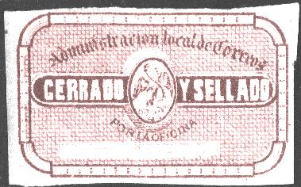
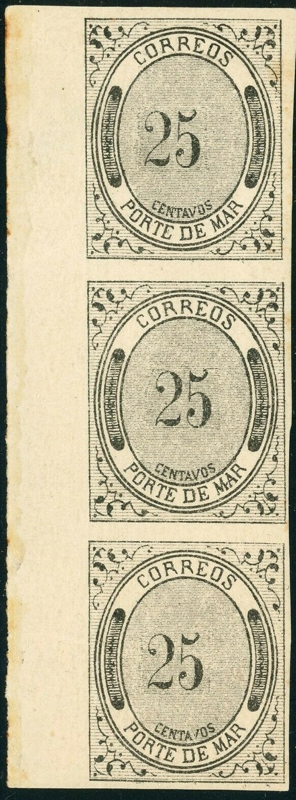
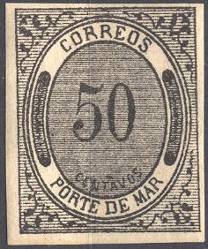
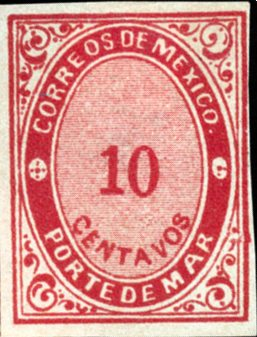
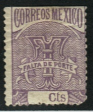
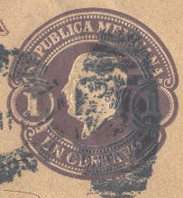

Note: on my website many of the
pictures can not be seen! They are of course present in the
catalogue;
contact me if you want to purchase it.

brown red
Other similar labels were issued from 1895 to 1905.
(Example of 1905 'SERVICIO POSTAL MEXICANO CERRADO OFICIALMENTE
DEPARTEMENTO DE REZAGOS')
These stamps were used to indicate the amount to be paid to English and French mailboats on letters carried by them.
(Forgeries, reduced sizes)
The following values exist: 10 c ,25 c, 35 c, 50 c, 60 c, 75 c, 85 c and 100 c. In a single sheet of 49 stamps, all values were printed.
Value of the stamps |
|||
vc = very common c = common * = not so common ** = uncommon |
*** = very uncommon R = rare RR = very rare RRR = extremely rare |
||
| Value | Unused | Used | Remarks |
| All values | *** | - | |



(Type 1, I believe the above stamps are genuine)


(Type 2; larger 'CENTAVOS')
2 c black 5 c black 10 c black 12 c black 20 c black 25 c black 35 c black 50 c black 60 c black 75 c black 85 c black 100 c black
Two types exist of these stamps; with small and larger 'CENTAVOS'. Genuine stamps of the small 'CENTAVOS' type (except the 10 c) have so-called movable parts; a rectangular region in the center can be distinghuished where the value has been inserted. This results in the non-matching of the background lines (see the above example of the 35 c). In the genuine stamps the letter 'TAV' of 'CENTAVOS' are written on the same background line. Furthermore the central tongue of 'E' of the word 'CORREOS' is placed in the center (not too high and not too low). N.B the values 30 c and 70 c do not exist and are forgeries! (Source Album Weeds, these are of American origin? See text below).
Value of the stamps |
|||
vc = very common c = common * = not so common ** = uncommon |
*** = very uncommon R = rare RR = very rare RRR = extremely rare |
||
| Value | Unused | Used | Remarks |
| 2 c | * | *** | |
| 5 c | *** | *** | 'CENTAVOS' large |
| 10 c | * | *** | |
| 12 c | * | R | |
| 20 c | * | R | |
| 25 c | *** | R | 'CENTAVOS' small or large |
| 35 c | *** | RR | 'CENTAVOS' small or large |
| 50 c | * | R | 'CENTAVOS' small or large |
| 60 c | *** | RR | 'CENTAVOS' small or large |
| 75 c | *** | RR | |
| 85 c | *** | RR | |
| 100 c | * | RR | 'CENTAVOS' small or large |
Similar stamps in red are essays.

With red cork cancel, I don't know if this cancel is genuine
Forgeries of these stamps exist. I've heard of forgeries made by the forgers Moens, Spiro, Bonasi and other unknown forgers. Examples (by the way, I'm not sure if the above stamps are genuine):


In the above forgeries the word 'CENTAVOS' is written too high up. There are no marks of the moveable plugs. Note the typical dots cancel. I've also seen the 25 c of this particular forgery set. I've seen the 2 c of this forgery set with the number '2' placed further to the right.
A whole sheet of Spiro forgeries.

The following forgeries are Fournier forgeries:
Page from the Fournier Album with Fournier forgeries.
There are no moveable parts in these forgeries. The 'E' of 'CORREOS' has the central tongue too high.
Examples of the cancels Fournier used on his forgeries (taken from 'The Fournier Album of Philatelic Forgeries'):
In The Philatelic Record 1882, page 125 the
following text can be found:
Mexico.—Of the Porte de Mar stamps there are some
extremely dangerous forgeries in circulation, many of which have
been bought by collectors as presenting varieties in the central
numerals. There is one set in particular, which, we are informed,
has been executed in the United States,
single stamps of which, except a 30 and a 70
centavos, values which the forger must have
evolved from his inner consciousness, are eminently calculated to
deceive. The chief points of failure in the forgeries are :
First, that the horizontal lines in the outer border do not in
many cases touch the oval, and are besides rather heavier than in
the genuine stamps ;
second, the word centavos is of inferior execution ;
third, the upper part of the arabescpie, in the right top corner,
is better drawn than that of the genuine stamp, in which the
upper tendril is imperfect, and seems to terminate in a sort of
dot;
fourth, the upper tendril of the arabesque, in the lower right
corner, turns outwards instead of being straight, as in the real
stamp. Of course the central numerals also differ from those in
the two sets of genuine stamps, but it is for this very reason
that these forgeries have hitherto been eagerly sought for. So
far as we can ascertain, and we have been working hard at these
stamps lately, there are but the two types of numerals, the large
and the small ; and all deviations from these are rubbish. The
forged stamps are usually obliterated. If several of them are
placed together, they at once attract attention by their dark
appearance as compared with even the most heavily printed of the
genuine stamps.


Reduced sizes
2 c brown 5 c yellow 10 c red 25 c blue 50 c green 100 c lilac
Mexico entered the UPU before these stamps were set into use. Used stamps therefore do not exist.
Value of the stamps |
|||
vc = very common c = common * = not so common ** = uncommon |
*** = very uncommon R = rare RR = very rare RRR = extremely rare |
||
| Value | Unused | Used | Remarks |
| All values | * | - | |
 
(Fournier forgeries)
Fournier offered forgeries of these stamps. The 'R' of 'MAR' resembles a 'P' with a dot behind it in the genuine stamps but in the forgeries it is an ordinary 'R'. There should be a dot in the bottom left corner, between the frame line and the half circular ornament, as in all other corners, however this dot is missing in these forgeries. A picture of such a forgery can also be found in 'Focus on Forgeries' by Varro E. Tyler.
Genuinly used stamps are very rare (maybe even non-existant); I have seen forged cancels: a large rectangle consisting of squares, a circle consisting of lozenges and a french alike numeral cancel '5129'.
(Forged cancel '5129', stamps are also forged)
For other forgeries with the same cancel click here.

Most likely an essay of the 1879 issue. The values 5 c yellow, 10
c pale brown, 25 c blue, 50 c green, 85 c black and 100 c pale
green exist.

50 c blue and red
20 c red and black
Value of the stamps |
|||
vc = very common c = common * = not so common ** = uncommon |
*** = very uncommon R = rare RR = very rare RRR = extremely rare |
||
| Value | Unused | Used | Remarks |
| 20 c | * | c | |
1892 Inscription 'FALTA DE PORTO', various desings, some with and some without value, example:

(Reduced sizes)
There is one more stamps with 'FALTA DE PORTE', 20 c, in red on green colour that is not shown in the collection above. These stamps were used in Celaya, Irapuato, Monterey and Vera-Cruz. Their status is very strange: a person send these labels to the above mentioned post offices, with the request to use them on unpaid letters. They were never officially issued and do not appear in modern catalogues. A scandal followed after the plot was uncovered.
1 c blue 2 c blue 4 c blue 5 c blue 10 c blue
Value of the stamps |
|||
vc = very common c = common * = not so common ** = uncommon |
*** = very uncommon R = rare RR = very rare RRR = extremely rare |
||
| Value | Unused | Used | Remarks |
| 1 c | c | c | |
| 2 c | c | c | |
| 4 c | c | c | |
| 5 c | * | * | |
| 10 c | * | * | |
These stamps can be found with all the surcharges that also exist on the regular postage stamps of Mexico (value * to ***). Examples:

'ES' ('Estado de Sonora') overprint
('GOBIERNO $ CONSTITUCIONALISTA' overprint, reduced size)
In 1917 these stamps were used as postage stamps by the constitutional government; they were overprinted 'GFMT and value. Also overprints 'G.P.DE M' and value in a fancy pattern were issued in 1917. Example:
('G.P.DE M.' and value overprint, reduced size)
Examples:

(Reduced size, with perforation???)


{kind=link}
{kind=link}
{kind=link}